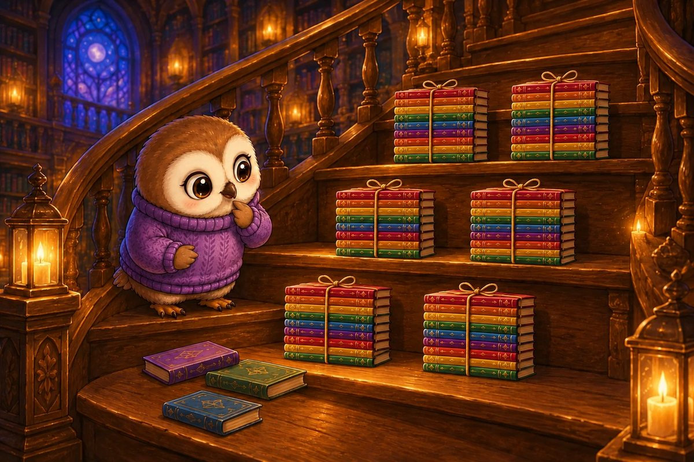
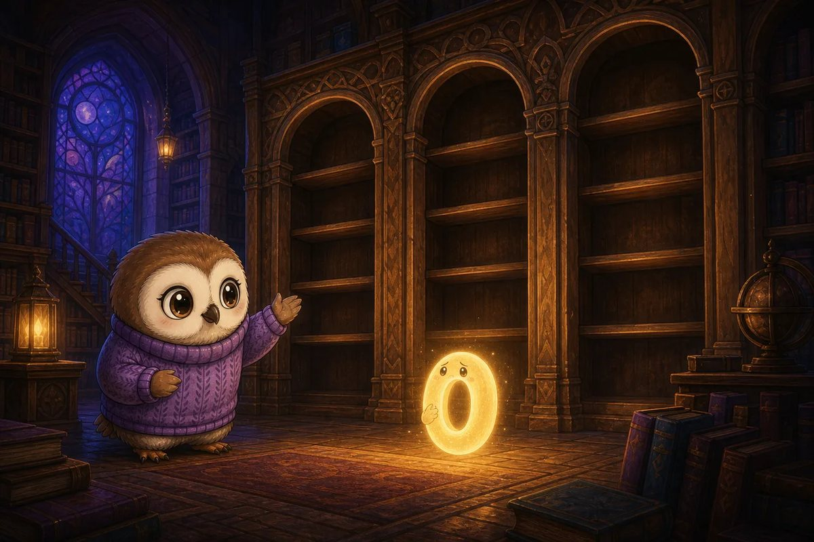
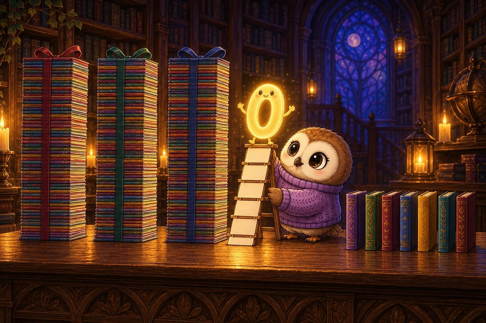
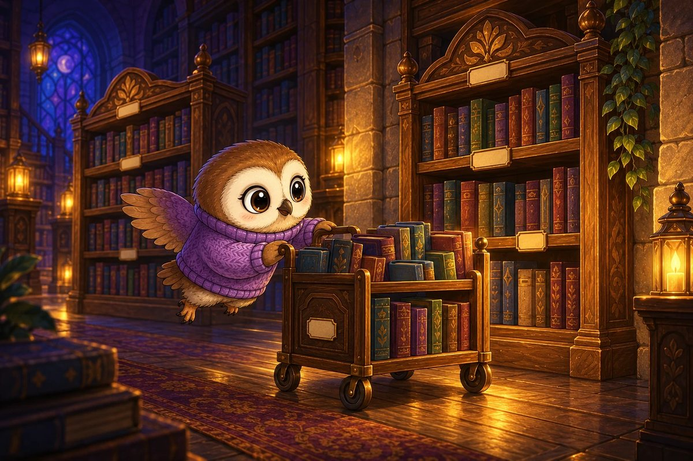
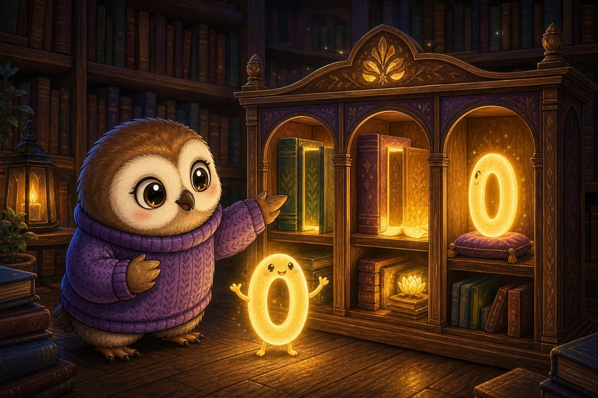
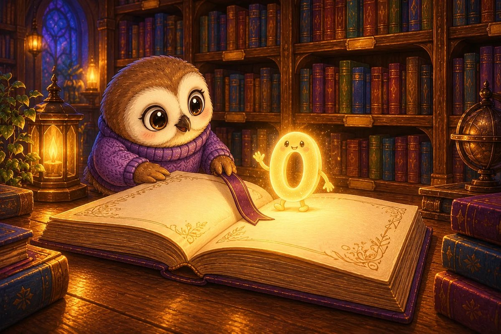

Booklava closes the library alone and hears a papery sniffle. A zero is hiding beneath the reading rug. Without it, the number 40 on the shelf label has become 4.
Try it: In 40, what value does the digit 4 have?
4
10
14
40
Show the answer
40. The 4 is in the tens place. Four tens are worth 40.

Page 2 of 7 · Tens on the Stairs
The zero will return only if Booklava proves that every digit has a place. On the spiral stair she finds 6 bundles of ten books and 3 single books.
Try it: What number is 6 tens and 3 ones?
36
60
63
603
Show the answer
63. Six tens make 60. Add 3 ones: 60 + 3 = 63.

Page 3 of 7 · The Echoing Hall
A label marked 205 echoes through the hall. The zero worries that it means nothing. Booklava explains that it holds the empty tens place so the other digits cannot slide together.
Try it: How many tens are in 205?
0
2
5
20
Show the answer
0. In 205, the digits mean 2 hundreds, 0 tens, and 5 ones. The zero holds the tens place.

Page 4 of 7 · A Taller Number
Booklava builds a ladder from number cards. The zero climbs between 3 hundreds and 7 ones, making a number far taller than 37.
Try it: What number has 3 hundreds, 0 tens, and 7 ones?
37
300
307
370
Show the answer
307. Three hundreds are 300, zero tens add nothing, and 7 ones make 307.

Page 5 of 7 · The Nearest Safe Shelf
A rolling book cart is labelled 68. It must stop at the nearest shelf marked in tens before it bumps the wall.
Try it: What is 68 rounded to the nearest 10?
60
68
69
70
Show the answer
70. The ones digit is 8, so round up. 68 is closer to 70 than 60.

Page 6 of 7 · Zero Finds Its Voice
“I do not always add value,” says Zero, “but sometimes I hold a place.” Booklava nods. In 450, Zero keeps the 5 in the tens column.
Try it: What is the value of the digit 5 in 450?
5
40
50
500
Show the answer
50. The 5 is in the tens place. Five tens are worth 50.

Page 7 of 7 · Home Between the Pages
Zero slips back into the book. Every shelf label grows to its proper size. Booklava leaves a small bookmark beside the page: Every place matters—even an empty one.
Try it: Which is the largest number: 47, 74, 407, or 470?
47
74
407
470
Show the answer
470. Compare hundreds first. 407 and 470 both have 4 hundreds; compare tens next. Seven tens is greater than zero tens, so 470 is largest.
The end · Great maths
Seven questions, one story.
Try the story again without peeking, or print it and work the questions on paper. SnackPack Basic Math has the rest of the story shelf, daily practice and number games.